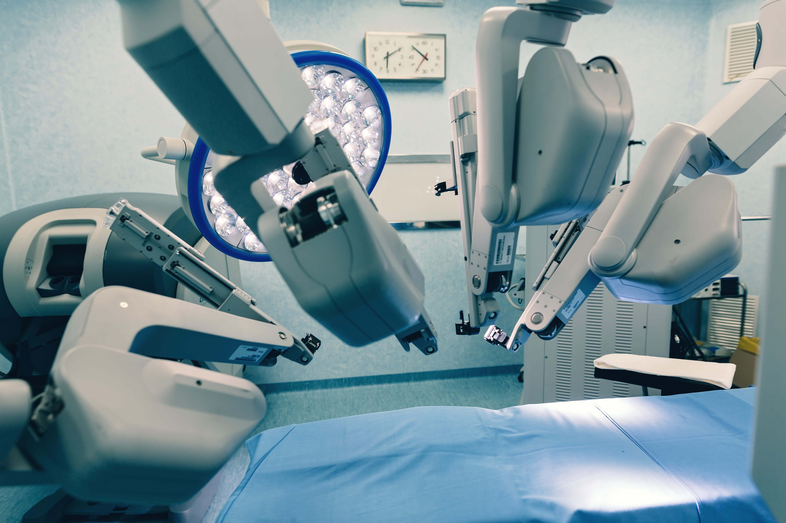

AI allows for analysis of vast amounts of data. By finding patterns in the data it greatly accelerates the process of medicical diagnosis and the discovery of new drugs.
By analysis, it can also generate personalised treatment plans to make a more effective recovery
Due to the high speed of AI it can greatly reduce the time and cost of diagnosis so its more efficient
Devices such as smartwatches and heartrate monitors have greatly improved people Health
Features such as step counters have been known to greatly improve peoples motivation as they can easily see their own daily progress and motivating them to beat their high score
The main benefit of robotic surgery over human surgery is the precision aspect of it by making use of HD 3D imaging in order to replicate the human surgeon
Another benefit is that it can reach places that humans typically wouldn't have been able to
These features translate to multiple benefits for humans such as less blood loss and faster recovery. However an issue that comes along with this technology is some people don't feel comfortable having a robot perform surgery on them
